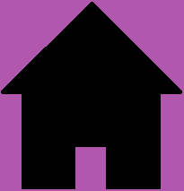

TopoTest
-VRISOVANJE
cc
VRISOVANJE GLEDENA SLIKO!

Na zemljevid vrišite topografski znak objekta s slike
Prikazan je zemljevid z nekaj praznimi mesti. Ko kliknete na prazno mesto, dobite sliko tega objekta. Vi pa med danimi opcijami izberete pravilno
POIZKUSI>>>
ZAPIŠI PRAVILEN ODGOVOR!
Izberite ali vpišite topografzki znak
Lahko vpišete ime topografskega znaka ali izberete pravilno opcijo. Imate 1 minuto časa, da pravilno odgovorite na čim več vprašanj